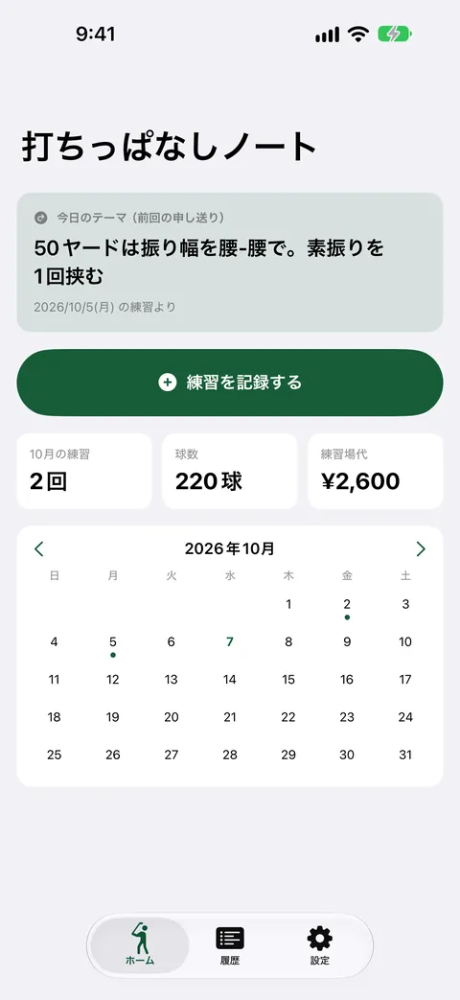
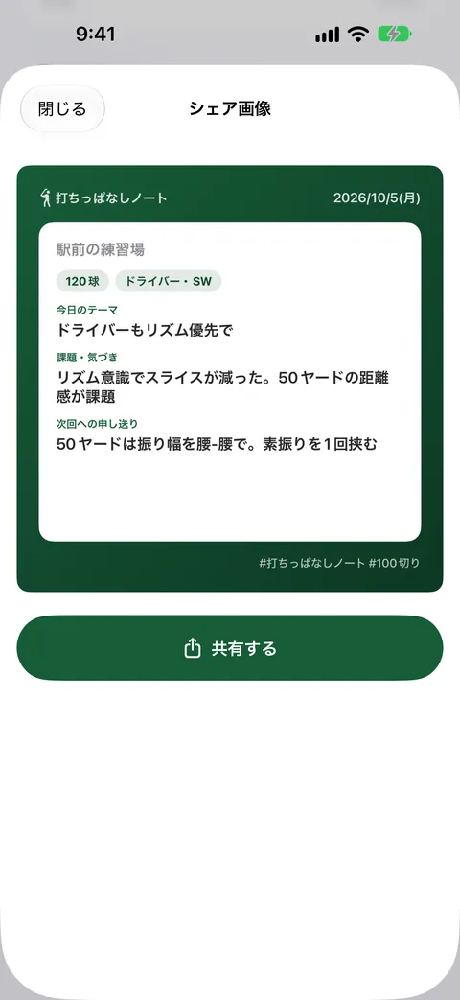
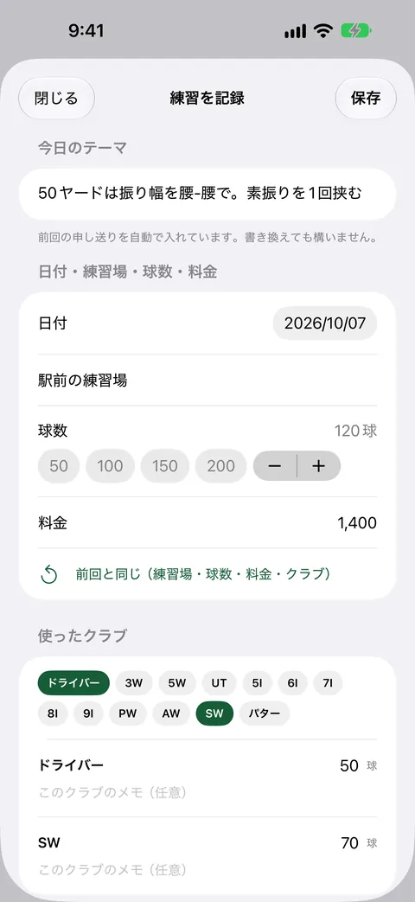
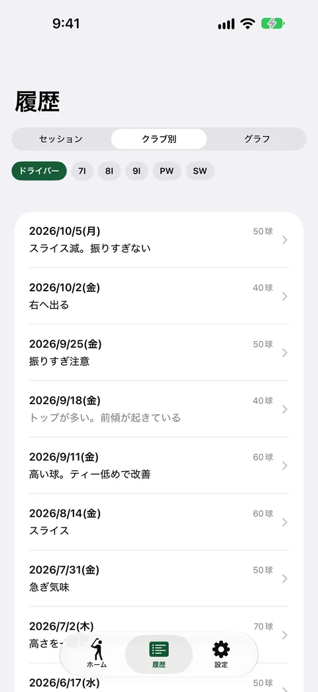
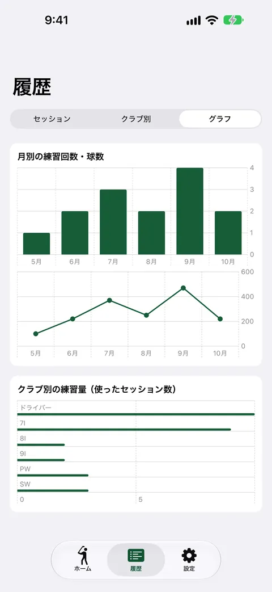

打ちっぱなしノート
前回の課題が次の練習に届く・買切
練習のたびに「課題・気づき」と「次回への申し送り」を書くと、次の練習日の朝に前回の申し送りが通知で届きます。クラブ別の課題の変遷も見返せます。記録・履歴・通知は無料。買い切りProでCSVとグラフが使えます。





打ちっぱなしノートは、ゴルフ練習場での練習を「言葉」で残すアプリです。球数や飛距離の数値は記録せず、今日の課題・気づきと、次回への申し送りを書き残します。前回の申し送りは次の練習日の朝に通知で届き、練習場に着く前に今日やることが決まります。
こんなときに
毎回なんとなく球を打って終わり、前回の課題を忘れて同じ練習を繰り返している。練習で気づいたことを、次の練習まで覚えていられない。
できること
- 練習の記録をタップ中心で入力します。球数のプリセット、クラブの選択、定型フレーズの挿入、「前回と同じ」のコピーで、打席を出る前に書き終えます
- 「次回への申し送り」を書くと、次の練習日の朝8時に通知が届き、次回の「今日のテーマ」にも入ります。練習日は記録の間隔から自動で推定します（周期は手動でも設定できます）
- クラブごとの課題・気づきの変遷を、時系列で見返せます
- 月ごとの練習回数・球数・練習場代と、練習した日のカレンダーを見られます
- 練習の記録を1枚のカード画像にして、SNSなどに共有できます
- 練習を続けると解除される実績があります
無料で使える範囲
記録、全期間の履歴、申し送り通知、クラブ別の振り返り、カレンダー、月間サマリ、シェア画像は無料です。買い切りPro（¥730）では、CSV書き出しと、月別推移・クラブ別練習量のグラフ分析が使えます。月額課金はありません。
安心について
記録はすべて端末の中だけに保存され、外部のサーバーへ送信されません。アカウント登録も不要です。通知は端末の中で予約するものです。通知を許可しなくても、記録と履歴は使えます。
弾道・飛距離・スイング動画の記録や、ラウンドのスコア管理の機能はありません。